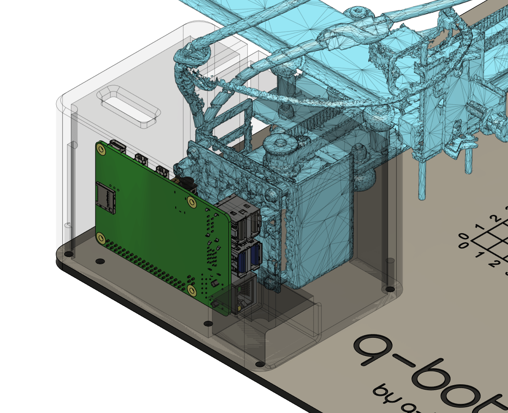
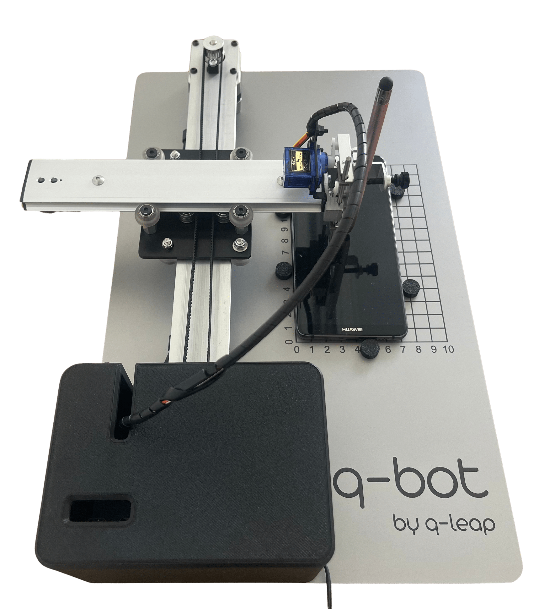

Plug & Play
No software installation required. Connect Q-BOT to your network and start immediately. Zero configuration needed.
The unique solution on the software testing market to automate dual authentication, including via physical devices like LuxTrust in Luxembourg.

Q-BOT is a one-of-a-kind robot designed to automate dual authentication (2FA) via mobile applications or physical secure devices. It enables the automation of testing processes that were previously inaccessible.
Born from an innovation combining electronics, software and design, Q-BOT automates LuxTrust dual authentication without human intervention, directly from your existing testing tools.
View technical specs

Q-BOT, a 100 % Made in Luxembourg solution, automates two-factor authentication (2FA), whether via mobile applications like LuxTrust — the leading solution in Luxembourg — or via similar devices deployed in other countries.
A simple, safe and effective solution to automate your critical test cases.
No software installation required. Connect Q-BOT to your network and start immediately. Zero configuration needed.
OTP code retrieved in under 10 seconds. No latency, immediate response for your automated tests.
100% recognition rate thanks to OLED technology and computer vision. Zero false positives.
Intuitive Web interface to create scenarios and API available for integration with your automation tools.
Q-Bot for all IT professionals
Q-BOT supports your testing, integration and business process automation (RPA – Robotic Process Automation) projects that require secure validation through mobile two-factor authentication.
Q-BOT supports your Web, Mobile or Desktop applications. Use cases are numerous: authenticating a user, creating a user account, confirming an e-commerce transaction, resetting a user's password, validating a money transfer, signing a document, requesting an official document...
Automate mobile authentication validation in your test scenarios
Q-Bot is the result of the Q-Leap team's expertise. Imagined and developed in-house by software testing experts, this solution was born from a real need encountered in the field — our own, but also our clients'.
Compatible with Selenium, Katalon, Robot Framework, and all other automation solutions thanks to its simple, secure API.
Customer needs identified and prototype development begins.
First working prototype based on the Luxtrust token.
Q-Bot v1 is installed at our first customers.
Q-Bot v2 adds support for all token types.
Q-Bot Mobile Pro for full smartphone automation.
Q-BOT is a one-of-a-kind robot designed to automate two-factor authentication (2FA) via mobile applications or secure devices. It enables the automation of testing processes that were previously inaccessible.
Q-BOT enables automation of critical test cases requiring two-factor authentication: 2FA login, document signing, transaction validation, official requests. Without Q-BOT, these scenarios require human intervention, making full automation impossible.
Testers can cover all application features without any omissions. Q-BOT is simple (no software installation), fast (OTP in under 10 seconds), 100% effective (perfect recognition rate), and accessible via Web interface or API.